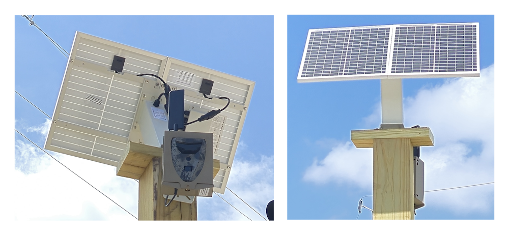
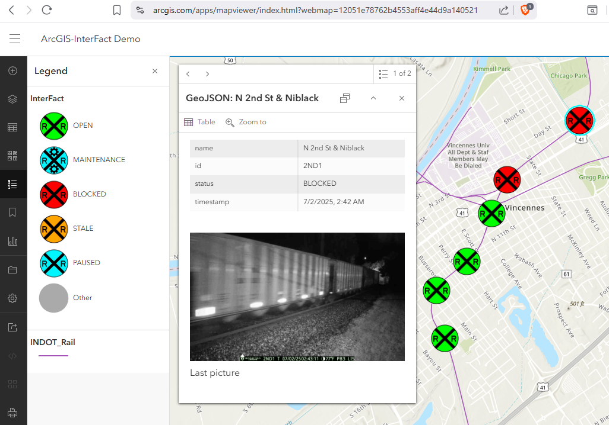

Problem
Solution
Status

Many mid-sized cities across the U.S. face a frustrating, familiar issue: freight trains stopping on roads without warning.
These delays disrupt commutes, emergency response, and daily life — from school drop-offs to medical appointments.
In cities like Muncie, Indiana, over 100 surveyed residents reported waiting between 5 minutes to over an hour behind a stopped train.
Your city may face similar delays — but it doesn’t have to.
See how InterFact can help.
Problem
Solution
Status
InterFact uses solar-powered smart cameras and machine learning to monitor your city's railroad crossings in real time.
The data is displayed in a clean, map-based interface that anyone can use — from city engineers to everyday commuters.
Here’s a look at one of our installations in Vincennes, IN:

Emergency responders can integrate data into ArcGIS:

Residents can view real-time statuses on a city map:

They can even sign up for instant push notifications when a train blocks or clears a crossing.
With more data, InterFact will offer predictive analytics and historic crossing patterns — invaluable for city planning and legislation.

🚦 Imagine this in your city:
Live maps. Smart alerts. Happier drivers. Faster emergency response.
All powered by the sun and AI.
Ready to learn more? See our project status.
Problem
Solution
Status
InterFact is currently live in Muncie and Vincennes, Indiana — and growing.
Could your city be next?
Why choose InterFact?
- Solar-powered: No need to tap into city power lines.
- Flexible installation: Works at any crossing — even without lights or barriers.
- Scalable system: Start with 1 or 10 cameras — we grow with your needs.
- Quick setup: Go live in days, not months.
- First responder ready: Help fire trucks and ambulances find the fastest route.
InterFact is offered as a service to cities looking for a low-cost, high-impact upgrade to their transportation infrastructure.
If your city is interested in exploring InterFact, please reach out for a demo:
Dr. Huseyin Ergin
hergin@bsu.edu
More about me
Follow us on social media for updates: